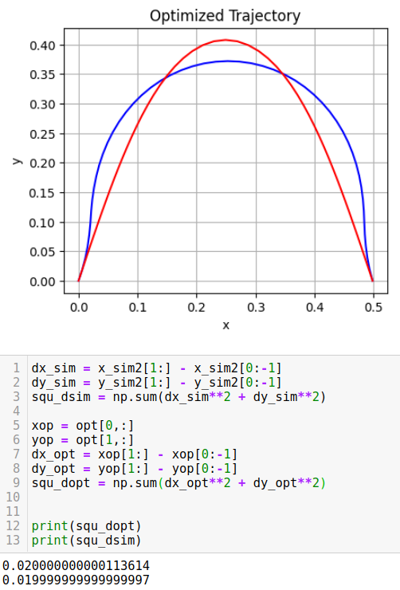
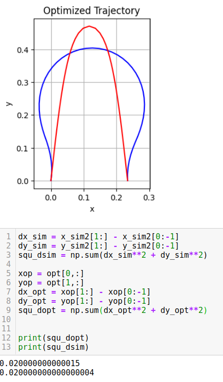

Use robot to bend flexible wire to specific shape as tools with optimal contorl and active learning
Key tools: Widow200 robot arms, ROS, Scipy, Pytorch, OpenAI gym, RLlib, C++
Github Link Google drive LinkAbstract:
Our goal in general is to construct a systematic method for using a soft, bendable rod as a tool. Consider a soft wire with fixed length held by two robot grippers, Related work done by Timothy Bretl's lab proved that any curve traced by this wire when in static equilibrium is a local solution to a geometric optimal control problem. Based on this framework, the shape of a flexible wire can be predicted given the specification of the two endpoints of the wire.
Project goal:
This is a long term research in Professor Todd Murphey's lab. My goal is to use this optimial control framework to bend the shape close to the desired initial configuration. Then construct the experimental pipline, being able to use two synchronized robot arms to move simultaneously, asking robot arms to bend wire into simulated shapes and doing manipulation tasks, such as pushing the ball forward and pulling the ball close. I also spent my summer in Professor Todd's lab as a research assistant. During summertime, I aimed to reduce the configuration space (hundreds to thousands) to only six dimension A space using machine learning. Timmothy Bretl derived this A space representation from Li groups. It aims to have A space first and then use it to solve the whole wire configuration. I reversed the process. I used Long-short term memeory to learn configuration to A space directly. Additionally, I constructed reinforcement learning p[ipline (PPO + Transformer) to make robot learn policy of complicated shapes beding. THe whole project is still in development with a focus on active learning using koopman operator in next step. I will use koopman operator to make robot learn complex manipulation through limited data.
My major work:
- Use optimal control (nonconvex in global, convex in local)to bend wire into desired shapes into desired shapes (local solution)
- Construct experimental pipline to be able to do experiment with two robot arms using robot operating system in C++
- Use Long-short memory to train model that mapping wire configuration to lower dimension space
- Construct reinforcement learning pipline with Pytorch, OPenAI Gym and Rllib to make robot learn complex shape bending as a direct method
Demo:
The videos below show robot arms bend the wire and do manipulation tasks. Wire configuration has been pre-calculated by optimization. Boundary configurations are used as waypoints (arm end-effector pose) to each manipulation.
Aims to bend flexible wire into specific parabola and push the red ball forward
Aims to bend flexible wire into specific parabola and push the box forward
Aims to bend flexible wire into specific parabola and drag the red ball close
Shape optimization results
Obstacle avoidance:
The results I show is in 2d version. I tested my results using different parabola shape in height. As parabola is getting flat, we should see optimized configuration will be similar or almost the same as the desired since less optimization or control energy needed to make the wire's elastic energy small. (Flat wire will be an ground truth minimized elastic energy in global) As desired parabola is getting taller, we should see the optimized solution has bigger difference than the desired shape, since more contorl effort needed to minimize the elastic energy along the wire.
Results and comparasion (Red is the desired and blue represents the optimized configuration)
Testing Results
 Condiguration dimension reduce training results from Long-short term memory
Obstacle avoidance:
I construct the neural network using a long short-term memory (LSTM) network architecture for mapping directly from $(q,u)$ to $\mathcal{A}$ space. I collected data with random a = (a_1,a_2,a_3,a_4,a_5,a_6) between 0 and 1 and obtained the corresponding wire configuration by solving differential Equations system. I separate the whole unit length into $100$ steps. Every step we obtained 16 data points to represent the configuration (flattened 4x4 transformation matrix). Overall, $16,000$ data points were collected. The input size for our LSTM + Linear model in each step is 16, and the output are the six figures in A domain. I used batch normalization between layers to avoid the gradient explosion and vanish. I trained this network with a batch size of $1000$ data points and a decreasing learning rate starting at $0.02$ for a total of $1000$ epochs. Finally, I obtained model performance with test error below $0.01$. This test error was calculated using Mean Squared Error (MSE) and was evaluated on data that had not been previously seen by the learning agent. The result can be found in the following plot. This MSE was calculated between actual A values and the predicted A values.
Training result

Future work:
- Implement koopman operator for robot learning on how to manipulate object with bended shapes
- Use teleop method to manipulate the arm with the object. (taking training data)
- Do actual experiment with learned policy or model